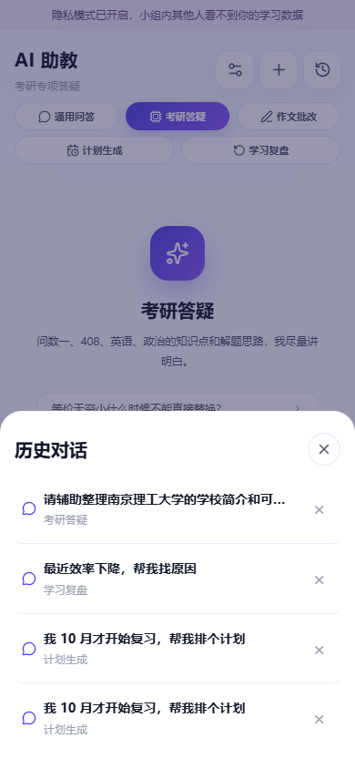
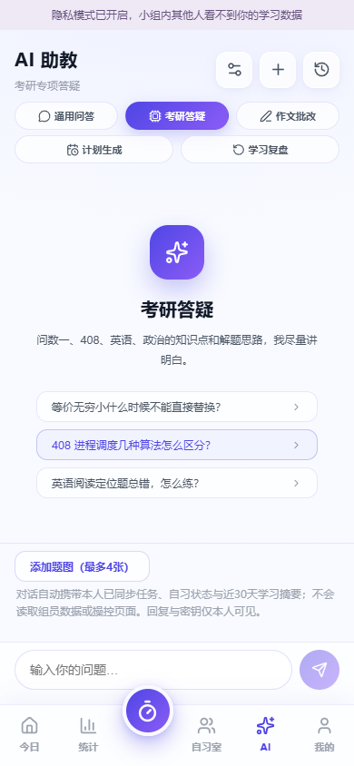
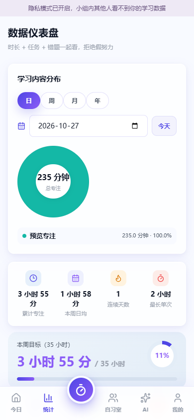
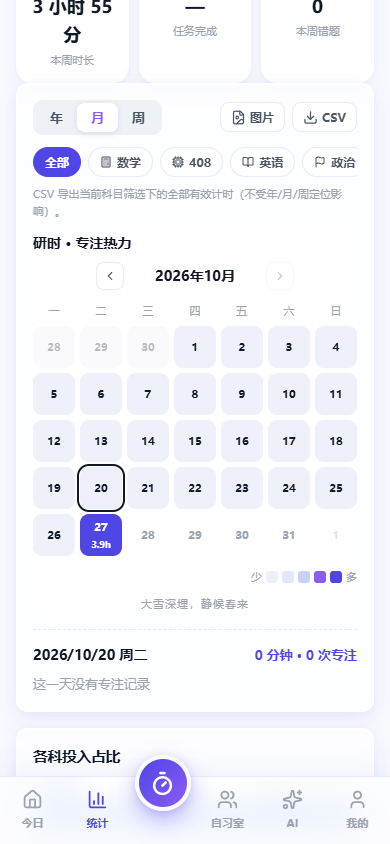
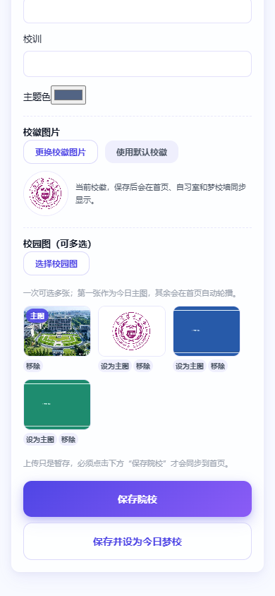
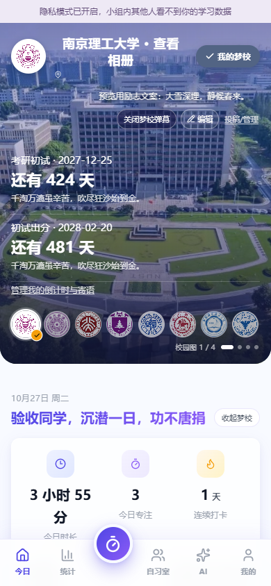
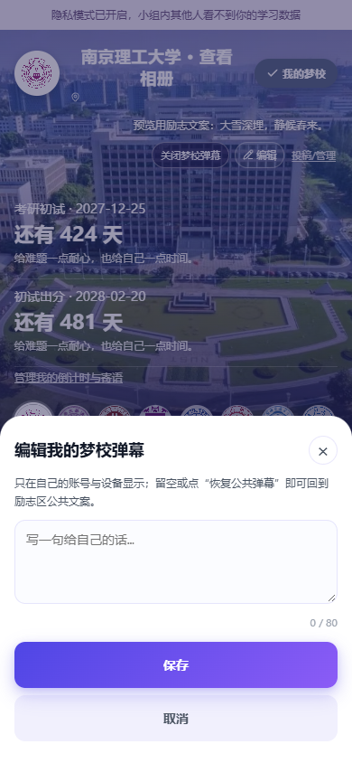
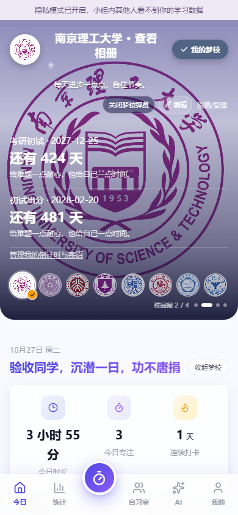

AI 历史对话：弹层已盖住底部导航，标题、关闭按钮和列表滚动完整。

AI 五个场景标签全部可见，不再横向裁掉「学习复盘」。

学习内容分布改为环形图：中心显示总时长，图例分色，日期加了「今天」快捷按钮。

专注日历默认打开月视图：日期数字、当日分钟数、选中状态与色阶更清楚；年/月/周仍可切换。

梦校管理：校徽单独预览；校园图明确「可多选」，第一张标记为主图，可设为主图或移除；新增「保存并设为今日梦校」。

今日首页：自定义梦校、上传校徽、校园图圆点（1/4）与自动轮播；弹幕操作单独一行。

梦校弹幕可编辑：新增「编辑」入口，只在本人的账号与设备显示，留空则恢复公共励志弹幕。

保存后首页直接显示个人弹幕；「投稿/管理」仍可进入励志区投稿或撤回公共投稿。